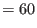
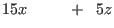
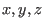
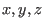

Next: Elementary Matrices Up: Matrix Arithmetic Previous: Matrix Multiplication Contents Index
It is common to think that jumping out of a hole is the inverse of jumping into a hole. The problem of performing this inverse action of getting out of a hole is usually more difficult than falling into it. Like most things in life, the more difficult action is the one we need to perform the most (or so it appears). The same relationship holds for finding the inverse of a matrix.
Before arriving at the method for calculating the inverse of a matrix, let us look at one of the reasons we might find a matrix inverse useful.
In the previous chapter, row operations were used to solve systems of linear equations. For example, the system
|  | ||
|  |

When Gauss-Jordan elimination is used, we end up with

This gives us the solutions
If we let

then we can write our system of equations as
In the section on matrix multiplication, we remarked that some square matrices (matrices
with the same number of rows as columns) have inverses. We use the superscript  to
show that a matrix is an inverse. We say that
to
show that a matrix is an inverse. We say that  is the inverse of
is the inverse of  and that
and that
 . We will use this as our definition.
. We will use this as our definition.
We now assume that  exists for our system of equations and write
exists for our system of equations and write
Since  is a column matrix containing the variable identifiers 
, we should easily
be able to calculate values for these variables for different values for the scalars of
is a column matrix containing the variable identifiers 
, we should easily
be able to calculate values for these variables for different values for the scalars of  .
That is, if we have
.
That is, if we have  , we just use matrix multiplication to find solutions for any
specified constant terms of our system of equations if solutions exist.
, we just use matrix multiplication to find solutions for any
specified constant terms of our system of equations if solutions exist.
If a square matrix  has an inverse, then
has an inverse, then  is called invertible or nonsingular.
If it doesn't have an inverse, it is called noninvertible or singular. A matrix
that is invertible is somewhat like a non-zero scalar.
is called invertible or nonsingular.
If it doesn't have an inverse, it is called noninvertible or singular. A matrix
that is invertible is somewhat like a non-zero scalar.
In the next section we will introduce the concept of elementary matrices which will be used to develop a method to determine if an inverse exists and how to calculate it.